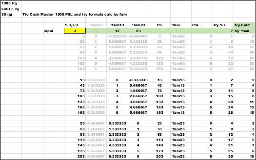

There are two matrixes to test the *ratio , let 's go back and look at the formulas by 10 's and 30 's.
Start counting the *wildcard by 10 's
Ex:
*1 = 1 , 11 , 21 , 31 , 41. . .
Second counting by 30 's , *fam ;
Ex:
*fam01 = 1 , 31 , 61 , . . .
*fam11 = 11 , 41 , 71 , . . .
*fam21 = 21 , 51 , 81 , . . .
Add another sort by *fam. Now all the *1 and *fam and PSL and try are sown together. The group (g) is self-evident because the values grow by thirty , and the (g) is under the *fam01 or *fam11 columns.

Add another sort by *fam.

Add another sort by *fam.


Add another sort by *fam.